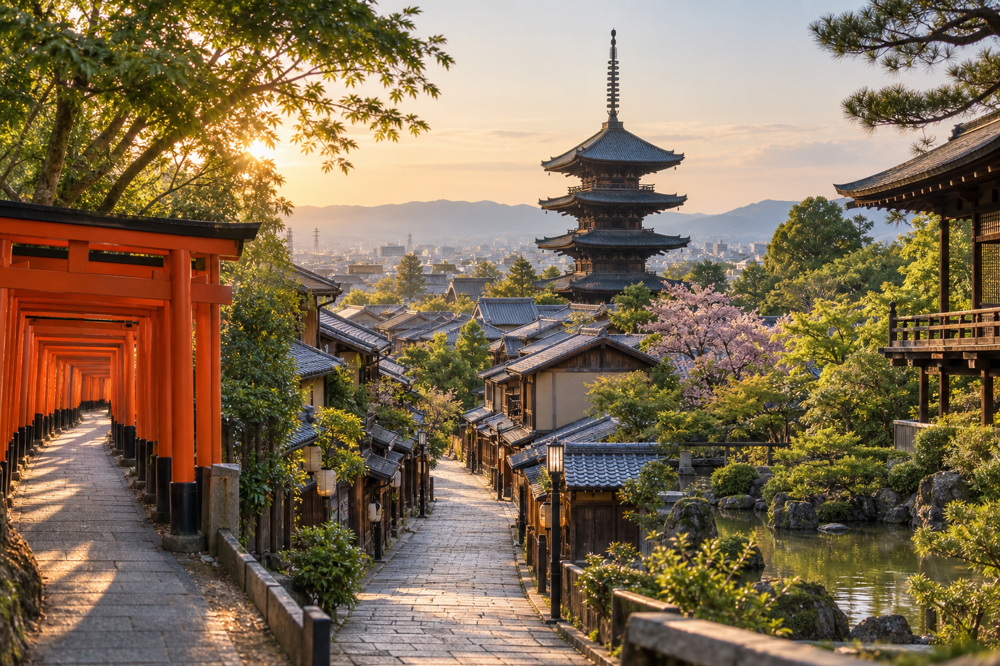
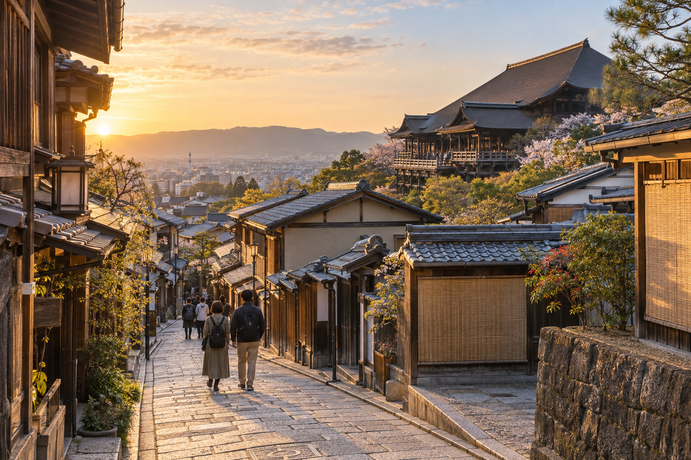
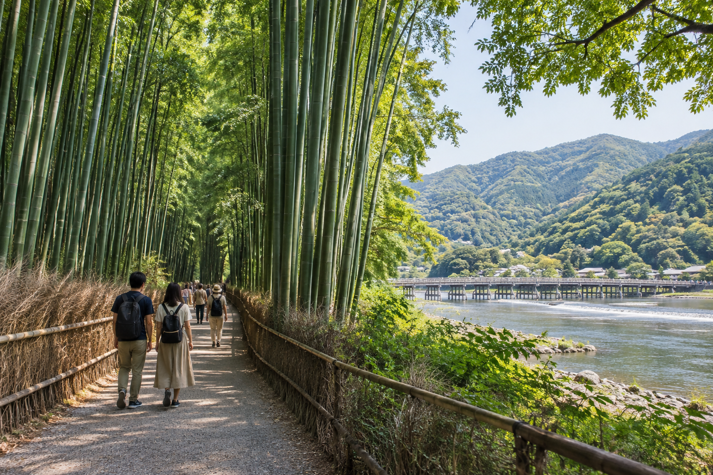

Kyoto Travel Guide for First-Time Visitors
Kyoto is often the part of a first Japan trip that looks easiest to plan. The map is smaller than Tokyo, many famous temples appear close together, and the city has a clear historic identity. In practice, Kyoto needs careful planning because its main sights are spread across different parts of the city, buses can become crowded, and several of the most popular places receive large numbers of visitors at the same time.
The best first visit is not built around seeing as many temples as possible. It is built around sightseeing areas. Spend one part of the day in eastern Kyoto, another in southern Kyoto, or give western Kyoto its own block. This reduces transport time and lets you walk through the streets, gardens, shrines, and neighborhoods between the major sights.
This guide explains how to plan Kyoto for a first visit, how many days to stay, which areas matter most, when to visit popular sights, how to handle crowds, transport basics, food, etiquette, and the mistakes that can make Kyoto feel rushed. Exact daily schedules are kept separate for our Kyoto 2-Day Itinerary and Kyoto 3-Day Itinerary.
Kyoto for First-Time Visitors at a Glance

| Planning Question | Good Starting Point |
|---|---|
| Recommended first stay | 2–3 full days |
| Best planning method | Group sights by area |
| Main transport | Trains, subway, buses and walking |
| Best early-start areas | Fushimi Inari, Kiyomizu /Higashiyama, Arashiyama |
| Main historic zone | Higashiyama and Gion |
| Main western area | Arashiyama |
| Main southern highlight | Fushimi Inari |
| Major northern sight | Kin kaku-ji |
| Best central base activity | Downtown, Nishiki and central Kyoto |
| Biggest planning mistake | Crossing the city repeatedly |
| Crowd strategy | Start early and stay later where practical |
Kyoto's official tourism guidance also divides sightseeing across central, eastern, western, northern, and southern areas rather than treating the city as one compact attraction zone.
Is Kyoto Worth Visiting on a First Trip to Japan?
Yes.
For most first-time Japan itineraries, Kyoto deserves a major place.
Tokyo shows you the scale and energy of modern Japan.
Kyoto gives you stronger access to:
- ✓Historic temples
- ✓Shinto shrines
- ✓Traditional streets
- ✓Gardens
- ✓Old districts
- ✓Japanese crafts
- ✓Traditional food culture
- ✓Historic architecture
You do not need to be deeply interested in Japanese history to enjoy Kyoto.
The city also works for travelers interested in:
- ✓Photography
- ✓Food
- ✓Walking
- ✓Gardens
- ✓Architecture
- ✓Culture
- ✓Seasonal scenery
Kyoto Is Not a Theme Park
This is important for first-time visitors.
Kyoto's famous districts are not isolated tourist attractions.
People:
- ✓Live there
- ✓Work there
- ✓Attend school there
- ✓Use the same streets
- ✓Visit the same shops
This is especially important in neighborhoods such as Gion and Higashiyama.
Treat residential streets as real neighborhoods.
Do not block entrances, enter private property, or photograph residents as though the area exists only for tourism.
Kyoto City's current responsible-travel guidance specifically asks visitors not to follow, touch, or photograph geiko and maiko without permission and to respect residential areas near major sights.
How Many Days Do You Need in Kyoto?
For a first visit, I would plan at least two full days.
Three full days is better if Kyoto is one of the main destinations on your Japan trip.
2 Days in Kyoto
Two days can work if you:
- ✓Prioritize major first-time sights
- ✓Start reasonably early
- ✓Group places geographically
- ✓Accept that you will not see every famous temple
This is a compact visit.
The exact route belongs in Kyoto 2-Day Itinerary.
3 Days in Kyoto
Three days gives you a much better balance.
You can:
- ✓Slow down in Higashiyama
- ✓Give Arashiyama proper time
- ✓Visit Fushimi Inari without squeezing it between distant sights
- ✓Add another temple, garden, or neighborhood
- ✓Handle crowds with more flexibility
Our Kyoto 3-Day Itinerary will own that detailed route.
4 or More Days
Extra time lets you move beyond the most famous first-time circuit.
You can add:
- ✓Quieter temples
- ✓Northern Kyoto
- ✓Smaller neighborhoods
- ✓More gardens
- ✓Craft experiences
- ✓Rural or outer Kyoto areas
- ✓A slower food-focused day
You do not need to fill every extra day with more famous temples.
Do Not Count a Late Arrival as a Full Kyoto Day
Suppose you take the Shinkansen from Tokyo and arrive in Kyoto at 3 PM.
That is useful sightseeing time.
It is not a complete Kyoto day.
You still need to:
- ✓Leave the station
- ✓Reach your hotel
- ✓Check in
- ✓Handle luggage
- ✓Orient yourself
Treat the remaining hours as a bonus afternoon or evening.
This keeps your main itinerary realistic.
Kyoto Is Smaller Than Tokyo but Can Feel Slower to Cross
This surprises some first-time visitors.
Tokyo has huge distances, but its dense railway network often moves you quickly between major districts.
Kyoto has fewer rail connections to some famous sights.
You may depend more on:
- ✓Buses
- ✓Walking
- ✓Smaller railway lines
- ✓A combination of transport
Official Kyoto guidance currently estimates approximate access from Kyoto Station at around 10 minutes for Fushimi Inari, 25 minutes for Saga/Arashiyama, 35 minutes for the Kiyomizu area, and 40 minutes for the Kinkaku-ji/Kinugasa area, depending on route and conditions.
This is why you should not plan Kyoto by choosing isolated attractions from a list.
Think of Kyoto as Sightseeing Zones
For planning purposes, break the city into broad areas.
A first-time visitor will mainly work with:
- ✓Eastern Kyoto
- ✓Southern Kyoto
- ✓Western Kyoto
- ✓Northern Kyoto
- ✓Central Kyoto
Each has a different role.
Eastern Kyoto: Best for the Classic First-Time Experience

For many visitors, eastern Kyoto contains the image of Kyoto they expected before arriving.
This broad area includes:
- ✓Kiyomizu-dera
- ✓Higashiyama
- ✓Gion
- ✓Yasaka Shrine
- ✓Traditional streets
- ✓Temples
- ✓Historic architecture
If you have limited time, eastern Kyoto should receive serious priority.
Kiyomizu-dera
Kiyomizu-dera is one of Kyoto's most famous temples.
Its wooden terrace sits on the hillside above the city, and the surrounding district connects naturally with historic walking streets.
The temple is better treated as part of a broader Higashiyama visit rather than an isolated attraction.
Kyoto's official guide identifies Kiyomizu-dera as a major World Heritage temple in the Higashiyama area.
Plan for the Uphill Walk
Reaching Kiyomizu-dera normally involves walking uphill.
This matters if:
- ✓It is hot
- ✓You have limited mobility
- ✓You are carrying luggage
- ✓You already walked all morning
Wear comfortable shoes and allow more time than the map suggests.
The surrounding streets are part of the experience.
Sannenzaka and Ninenzaka
The historic slopes around the Kiyomizu area are among Kyoto's most photographed streets.
Expect:
- ✓Traditional-style buildings
- ✓Shops
- ✓Cafes
- ✓Souvenirs
- ✓Significant crowds
Do not rush through them only to reach the next temple.
The streets themselves are part of the reason this area works so well for first-time visitors.
Yasaka Pagoda Area
Views around Yasaka Pagoda, also known as Hokan-ji, are another recognizable part of Higashiyama.
The best experience is usually walking through the wider neighborhood rather than arriving only for one photograph.
Remember that some surrounding streets and properties are residential or privately managed.
Continue Toward Gion
Higashiyama connects naturally toward Gion.
This makes the two areas much easier to combine than sending yourself to another side of Kyoto halfway through the day.
Kyoto's official tourism guide describes Gion and Kiyomizu as one connected sightseeing area, with temples, traditional streets, restaurants, tea houses, shops, and cultural districts within walking distance of one another.
What Is Gion?
Gion is one of Kyoto's historic entertainment districts.
It is associated with:
- ✓Geiko
- ✓Maiko
- ✓Traditional tea houses
- ✓Restaurants
- ✓Historic streets
- ✓Yasaka Shrine
It is also one of the areas where visitor behavior matters most.
Do Not Chase Geiko or Maiko for Photos
If you happen to see a geiko or maiko, do not:
- ✓Follow them
- ✓Block their path
- ✓Touch them
- ✓Demand a photograph
- ✓Photograph where prohibited
They may be traveling to work.
Kyoto's current official visitor guidance explicitly asks tourists not to stop or photograph geiko and maiko without permission.
Is Gion Better During the Day or Evening?
Both provide different experiences.
Daytime
Better for:
- ✓Walking
- ✓Nearby temples
- ✓Shops
- ✓Combining with Higashiyama
Evening
Better for:
- ✓Quieter visual atmosphere in some streets
- ✓Restaurants
- ✓Traditional architecture after daylight crowds ease
You do not need to stay until late at night.
An early evening walk can work well after a Higashiyama sightseeing day.
How Much Time Does Eastern Kyoto Need?
More than many first-time itineraries allow.
If you include:
- ✓Kiyomizu-dera
- ✓Historic slopes
- ✓Yasaka area
- ✓Gion
- ✓Stops for food
- ✓Walking
you can easily use a substantial part of a day.
JNTO's current Higashiyama guidance says visitors should expect at least a full day for the wider district if they want to avoid feeling rushed.
That does not mean every first-time visitor must spend a full day there.
It means you should not schedule five other distant Kyoto attractions around it.
Southern Kyoto: Fushimi Inari and More
Southern Kyoto is best known internationally for Fushimi Inari Taisha.
This is one of the easiest famous Kyoto sights to reach by train from Kyoto Station.
It can fit:
- ✓Early morning
- ✓Later afternoon
- ✓A dedicated southern Kyoto block
Fushimi Inari Taisha
Fushimi Inari is famous for its long paths of vermilion torii gates climbing the mountain behind the shrine.
The shrine itself dates back to the eighth century and is associated with Inari.
Kyoto's official guide notes that thousands of torii gates continue into the hills behind the main shrine area.
You Do Not Have to Hike the Entire Mountain
This is one of the most useful first-time tips.
You can visit:
- ✓Main shrine
- ✓Lower torii paths
- ✓Part of the mountain route
without completing the entire climb.
The full upper route requires much more time and physical effort.
Choose based on your:
- ✓Fitness
- ✓Weather
- ✓Schedule
- ✓Interest
Do not continue uphill simply because you think the visit only counts if you finish everything.
Go Early if You Want a Quieter Experience
Fushimi Inari is extremely popular.
An earlier visit can reduce crowd pressure around the lower gates.
Later periods can also sometimes feel calmer than the main daytime peak.
The deeper you walk, crowds may thin, but do not depend on that as your only strategy.
Fushimi Is More Than the Shrine
The wider Fushimi area is also historically associated with:
- ✓Sake production
- ✓Canals
- ✓Traditional commercial areas
- ✓Local history
Kyoto's official tourism site notes that Fushimi remains one of Japan's important sake-brewing areas, with more than 20 breweries in the district.
For a first short visit, however, Fushimi Inari will usually remain the priority.
Western Kyoto: Arashiyama

Arashiyama is one of Kyoto's major first-time sightseeing areas.
It combines:
- ✓Bamboo
- ✓River scenery
- ✓Temples
- ✓Mountains
- ✓Gardens
- ✓Walking
It deserves its own geographical block.
Do not visit Arashiyama for one hour and then immediately cross Kyoto to another distant attraction if you have enough time to avoid it.
Arashiyama Bamboo Grove
The bamboo grove is one of Kyoto's most recognizable sights.
It can also become crowded.
Do not expect the empty bamboo path shown in carefully timed photographs.
Arriving earlier can improve the experience, but other visitors may still be present.
The Bamboo Grove Is Not All of Arashiyama
This is one of the biggest first-time mistakes.
Travelers sometimes:
- ✓Arrive in Arashiyama
- ✓Walk through the bamboo
- ✓Take a photo
- ✓Leave
The wider area has much more to offer.
Depending on your interests, you may include:
- ✓Tenryu-ji
- ✓Togetsukyo Bridge
- ✓River views
- ✓Gardens
- ✓Smaller streets
- ✓Other temples
Kyoto's official guidance lists the Bamboo Grove, Togetsukyo Bridge, and Tenryu-ji among Arashiyama's major attractions.
How Much Time Should You Give Arashiyama?
At least a substantial half day for most first-time visitors.
Longer if you want:
- ✓Temples
- ✓Gardens
- ✓Scenic walking
- ✓A relaxed lunch
- ✓Less famous parts of the district
Again, the exact sequence belongs in the itinerary pages.
The pillar-page rule is:
Give Arashiyama enough time to justify crossing Kyoto to reach it.
Northern Kyoto: Kinkaku-ji and Beyond
Northern Kyoto contains several important cultural sights.
The best-known is:
Kinkaku-ji, the Golden Pavilion.
Kinkaku-ji is visually distinctive and often appears on first-time Kyoto lists.
The challenge is location.
It does not connect as naturally with every other famous Kyoto sight as places inside Higashiyama do.
Should Every First-Time Visitor See Kinkaku-ji?
Not necessarily.
It is an important and beautiful landmark.
But if you only have two days, adding it may require giving up something else.
Do not treat every famous Kyoto temple as compulsory.
Choose it if:
- ✓It is personally important to you
- ✓Northern Kyoto fits your route
- ✓You have enough time
This is where a good itinerary becomes selective.
Temple Fatigue Is Real
Kyoto contains an extraordinary number of religious sites.
A first-time visitor can make the mistake of planning:
temple → temple → temple → shrine → temple
all day.
By the fourth or fifth stop, even impressive places may start to blur together.
Mix your Kyoto days with:
- ✓Historic streets
- ✓Food
- ✓Gardens
- ✓Markets
- ✓River walks
- ✓Shopping
- ✓Neighborhoods
You will usually appreciate the temples more.
Central Kyoto: Downtown, Nishiki and Kyoto Station
Central Kyoto serves a different purpose.
It combines:
- ✓Food
- ✓Shopping
- ✓Markets
- ✓Restaurants
- ✓Transport
- ✓Historic and modern city life
It can be useful:
- ✓On arrival day
- ✓During poor weather
- ✓In the evening
- ✓Between sightseeing areas
Nishiki Market
Nishiki Market is one of central Kyoto's best-known food areas.
It is useful for exploring:
- ✓Japanese ingredients
- ✓Snacks
- ✓Local foods
- ✓Specialty shops
- ✓Small purchases
Do not treat it as an unlimited street-food buffet.
Some businesses have their own eating rules, and crowded passages need consideration.
Follow shop instructions and avoid blocking the walkway.
Downtown Kyoto
The broader downtown area around places such as:
- ✓Shijo
- ✓Kawaramachi
- ✓Teramachi
- ✓Pontocho surroundings
can be useful for:
- ✓Shopping
- ✓Dinner
- ✓Cafes
- ✓Evening walks
This means you do not need to schedule every Kyoto evening around another temple.
Kyoto Station Is More Than a Transfer Point
Kyoto Station is the main arrival point for many first-time visitors coming from:
- ✓Tokyo
- ✓Osaka
- ✓Other Japanese cities
The station area also contains:
- ✓Restaurants
- ✓Shopping
- ✓Hotels
- ✓Transport connections
It can be particularly useful on arrival or departure days when you do not want to travel far across the city.
The Most Important Kyoto Planning Rule
Do not plan Kyoto like this:
Fushimi Inari → Arashiyama → Kiyomizu-dera → Kinkaku-ji → Gion
simply because those are five famous places.
They sit in different parts of Kyoto.
A much better approach is:
Choose an area → explore it properly → move to one logical next area
This lowers transport time, reduces crowd frustration, and gives you more time to experience Kyoto instead of only traveling between landmarks.
How to Get Around Kyoto
Kyoto's transport system is easier to understand once you stop expecting it to work like Tokyo.
Tokyo's rail network reaches almost every major sightseeing district. Kyoto requires a mix of:
- ✓JR trains
- ✓Private railways
- ✓Subway
- ✓City buses
- ✓Walking
- ✓Occasional taxis
The best option changes by area.
For a first visit, I would not plan to use buses for every trip. Kyoto's official tourism guidance specifically recommends combining trains and buses and using rail where practical to avoid road congestion.
Use Trains When They Fit the Route
Several major Kyoto areas have useful railway access.
For example:
Fushimi Inari
JR and Keihan services make this one of the easier major sights to reach by train.
Arashiyama
JR and private railway services can take you close to different parts of the district.
Gion and Higashiyama
Keihan railway stations can be useful depending on where you are starting.
Central Kyoto
Subway and railway lines work well around many central areas.
The practical rule is:
Check the nearest useful rail station before automatically choosing a bus.
A train may avoid road traffic and crowded tourist bus routes.
Kyoto Subway
Kyoto has two subway lines:
- ✓Karasuma Line
- ✓Tozai Line
The subway network is much smaller than Tokyo's.
You probably will not use it for every major attraction.
But it can be very useful for moving efficiently through parts of central Kyoto and connecting with other rail services.
Do not dismiss the subway simply because many famous temples are not directly beside a station.
It can still handle the longest part of your journey before you:
- ✓Walk
- ✓Transfer to a bus
- ✓Switch to another railway
Kyoto Buses
Buses remain important because several famous Kyoto sights do not have a convenient railway station immediately beside them.
They can be useful for places such as:
- ✓Kinkaku-ji
- ✓Parts of Higashiyama
- ✓Some northern areas
The problem is congestion.
A bus journey that looks short on a map can take considerably longer during busy periods.
Kyoto's official tourism site warns that general route apps can underestimate travel times when road congestion is heavy.
Do Not Build a Kyoto Day Around Five Bus Rides
That creates several problems:
- ✓Waiting
- ✓Traffic
- ✓Crowded vehicles
- ✓Unpredictable arrival times
- ✓More standing
- ✓Less sightseeing
If rail gets you reasonably close, use it.
Then walk or make one short bus connection.
Kyoto's Sightseeing Express Buses
Kyoto has added limited-stop sightseeing-oriented bus services on popular routes to help move visitors more efficiently.
These can be useful when their route matches your destination.
However, do not assume that a sightseeing bus is automatically the fastest option from your hotel.
Check the actual route on the day.
Kyoto City continues to adjust tourist transport to reduce congestion, including dedicated and limited-stop services around major sightseeing corridors.
Should You Buy a Kyoto Transport Pass?
Maybe.
But do not buy one simply because you are staying for two or three days.
Kyoto offers transport passes that can cover combinations of:
- ✓Subway
- ✓City buses
- ✓Selected bus services
A pass works best when your planned rides fall inside its coverage.
Subway & Bus 1-Day Pass
Kyoto's official tourism guidance currently highlights the Subway & Bus 1-Day Pass as one option for visitors using both systems extensively.
Before buying it, ask:
- ✓How many rides will I make?
- ✓Will I use covered buses?
- ✓Will I use private railways instead?
- ✓Will I walk between nearby sights?
- ✓Is JR better for one of my main routes?
A pass should match your sightseeing plan.
Do not redesign the day simply to use the pass more often.
Can You Use an IC Card in Kyoto?
Compatible IC cards are useful on many local transport services.
If you already have:
- ✓Suica
- ✓PASMO
- ✓ICOCA
from another part of Japan, you generally do not need a separate card just because you arrived in Kyoto.
Our IC Cards in Japan: Suica, PASMO and ICOCA Explained covers card use in detail.
For Kyoto, the main advantage is simple pay-as-you-go transport.
Walking Is a Major Part of Kyoto
Even with good transport planning, expect to walk a lot.
Walking is often the best way to experience places such as:
- ✓Higashiyama
- ✓Gion
- ✓Arashiyama
- ✓Central shopping streets
- ✓Temple grounds
Many of Kyoto's most memorable moments happen between the famous sights.
You may notice:
- ✓Small shrines
- ✓Traditional houses
- ✓Gardens
- ✓Local shops
- ✓Narrow streets
- ✓Canals
Do not treat every walk as wasted time between attractions.
Comfortable Shoes Matter
Kyoto walking can include:
- ✓Hills
- ✓Temple stairs
- ✓Stone paths
- ✓Long shrine approaches
- ✓Uneven surfaces
Fashionable shoes that become painful after two hours can affect the entire day.
Prioritize comfort.
When Does a Taxi Make Sense in Kyoto?
Taxis can be more useful in Kyoto than first-time budget travelers sometimes expect.
A taxi may make sense when:
- ✓Two sights are awkwardly connected
- ✓Bus traffic is heavy
- ✓You are traveling as a small group
- ✓You have luggage
- ✓Someone has limited mobility
- ✓You are tired after a long sightseeing day
For example, spending extra money on one short taxi can sometimes save enough time to make the rest of the day easier.
You do not need to use taxis constantly.
Use them selectively.
Do Not Sightsee With Large Luggage
This is especially important in Kyoto.
Dragging large suitcases through:
- ✓Busy buses
- ✓Narrow streets
- ✓Temple approaches
- ✓Crowded stations
makes sightseeing harder for you and everyone nearby.
Kyoto's official tourism guidance actively promotes luggage storage and delivery as part of its congestion strategy.
If you arrive before hotel check-in:
- ✓Leave luggage at the hotel if permitted
- ✓Use station storage
- ✓Use a luggage service
Then begin sightseeing.
For multi-city transfers, Luggage Forwarding in Japan: How Takkyubin Works explains the wider Japan system.
Where Should First-Time Visitors Stay in Kyoto?
The exact neighborhood decision belongs in Where to Stay in Kyoto: Best Areas for First-Time Visitors.
At pillar level, think about three things:
transport + evening convenience + your sightseeing priorities
rather than looking for the hotel closest to one temple.
Kyoto Station Area
Useful for travelers who prioritize:
- ✓Shinkansen
- ✓Arrival and departure logistics
- ✓Rail connections
- ✓Luggage convenience
- ✓Restaurants near the station
It can be especially practical on a short first visit.
The trade-off is that it does not give you the same historic atmosphere as staying closer to central Kyoto or Gion.
Downtown Kyoto
Areas around central shopping and dining districts can work well if you want:
- ✓Restaurants
- ✓Shopping
- ✓Evening activity
- ✓Access to several transport options
- ✓A central base
This can provide a strong balance between convenience and atmosphere.
Gion and Higashiyama Side
This may appeal to travelers who value:
- ✓Historic streets
- ✓Evening atmosphere
- ✓Walking access to eastern Kyoto
The trade-off can be:
- ✓Higher prices
- ✓Crowds
- ✓Less convenient access to some other parts of the city
The detailed comparison should come later in the accommodation guide.
One Kyoto Hotel Is Usually Enough
For a two- or three-day first visit, do not move hotels inside Kyoto.
Changing accommodation costs time through:
- ✓Packing
- ✓Check-out
- ✓Luggage movement
- ✓Check-in
Kyoto is not large enough to justify changing hotels simply because you spend one day in Arashiyama and another in Higashiyama.
Choose one useful base.
How to Avoid Kyoto's Biggest Crowds
Crowds are one of the main reasons some first-time visitors enjoy Kyoto less than expected.
The solution is not trying to find a completely empty Kyoto.
Popular places are popular for a reason.
Instead, plan when you visit them.
Start Early at the Most Popular Outdoor Sites
Early starts are particularly useful for places such as:
- ✓Fushimi Inari
- ✓Arashiyama
- ✓Higashiyama streets
These areas often become much busier later in the morning.
If you have one place where photography or quiet walking matters, make it your first major stop.
Do Not Start Every Day at 10 AM
By then:
- ✓Tour groups are active
- ✓Day visitors have arrived
- ✓Popular buses are busier
- ✓Major streets are filling
You do not need to wake at 5 AM every morning.
But one or two early starts can make a major difference.
Stay Later in Selected Areas
Another strategy is visiting certain neighborhoods after the main daytime crowds begin to leave.
Areas such as:
- ✓Gion
- ✓Higashiyama streets
- ✓Central Kyoto
can feel different toward evening.
However, temple opening hours vary.
Do not assume every attraction stays open simply because the streets remain accessible.
Use Kyoto's Crowd Information
Kyoto's official tourism organization provides a congestion forecast and live-camera information for popular sightseeing areas.
This is useful because crowd conditions can vary by:
- ✓Day
- ✓Time
- ✓Season
- ✓Event
The official system can help visitors identify less crowded times and alternative areas.
For a flexible three-day trip, you can use this information to change the order of your sightseeing.
Visit Famous Places and Quieter Places
You do not need to avoid Kiyomizu-dera or Fushimi Inari simply because they are popular.
Instead, balance them.
For example:
major temple → quieter streets → lunch → garden → evening neighborhood
often feels better than:
major temple → major temple → famous shrine → famous market
all in one continuous sequence.
Best Time to Visit Kyoto
Kyoto works year-round.
The experience changes significantly by season.
There is no single perfect month for everyone.
Spring: March to May
Spring is one of Kyoto's most popular periods.
The biggest attraction is cherry blossom season.
You can also expect:
- ✓Mild weather
- ✓Flowers
- ✓Comfortable walking conditions
- ✓Seasonal events
The downside is demand.
Late March into early April is one of Kyoto's busiest periods. Kyoto's official tourism information identifies cherry-blossom season as one of the city's largest tourism peaks.
Is Cherry Blossom Season Worth It?
Yes, if blossoms are a major priority.
But prepare for:
- ✓Higher accommodation demand
- ✓Crowded transport
- ✓Busy temples
- ✓Busy photography locations
Do not expect empty historic streets surrounded by blossoms.
Plan for beauty and other visitors.
Summer: June to August
Kyoto summers can be hot and humid.
Official Kyoto seasonal guidance notes that summer highs can approach about 35°C, particularly during the hottest part of the season.
This changes how you should plan.
Summer Strategy
Use early morning for:
- ✓Temples
- ✓Shrines
- ✓Long walks
- ✓Arashiyama
Use the hotter middle of the day for:
- ✓Lunch
- ✓Museums
- ✓Shopping
- ✓Rest
- ✓Indoor attractions
Then continue outdoors later.
Gion Matsuri
July is especially important because of Gion Matsuri, one of Kyoto's major festivals.
Festival periods can be exciting but also very busy.
If you visit specifically for the festival, plan around it.
If you do not care about the festival, understand that it can affect:
- ✓Crowds
- ✓Transport
- ✓Accommodation
- ✓Street access
Autumn: September to November
Autumn is another major Kyoto season.
Visitors come for:
- ✓Maple colors
- ✓Comfortable walking weather
- ✓Temple gardens
- ✓Seasonal illuminations
Kyoto's official information identifies the autumn-leaf period, especially around mid-November into early December, as another major tourism peak.
Autumn Can Be Excellent but Busy
If autumn color matters, the crowds may be worth accepting.
But do not schedule every famous foliage temple for the same afternoon.
Choose a few places and let the seasonal atmosphere become part of the day.
Winter: December to February
Winter receives less attention from many first-time visitors.
That can be an advantage.
Possible benefits include:
- ✓Fewer visitors than peak blossom periods
- ✓Clearer-feeling streets on some days
- ✓Seasonal food
- ✓Occasional snow
- ✓Different temple atmosphere
Kyoto can also be cold.
Official local guidance notes winter temperatures can fall below about 5°C, so proper clothing matters.
Is Winter a Bad Time for Kyoto?
No.
If:
- ✓Cherry blossoms are not important
- ✓Autumn leaves are not essential
- ✓You prefer fewer peak-season crowds
winter can be a strong option.
The city does not depend on one seasonal attraction.
What Time of Day Is Best for Kyoto Sightseeing?
I would divide a normal day into three different purposes.
Early Morning
Best for:
- ✓Famous outdoor locations
- ✓Photography
- ✓Walking
- ✓Popular shrines
- ✓Historic streets
Midday
Best for:
- ✓Lunch
- ✓Markets
- ✓Museums
- ✓Less crowd-sensitive attractions
- ✓Shopping
Late Afternoon and Evening
Best for:
- ✓Gion
- ✓Downtown
- ✓Restaurants
- ✓Selected seasonal illuminations
- ✓Slower neighborhood walks
This approach is more useful than trying to visit every attraction between 10 AM and 4 PM.
Food in Kyoto
Kyoto deserves more than quick meals between temples.
Its food culture is part of the destination.
You may encounter:
- ✓Kaiseki
- ✓Tofu dishes
- ✓Soba
- ✓Udon
- ✓Sushi
- ✓Matcha sweets
- ✓Wagashi
- ✓Kyoto vegetables
- ✓Pickles
- ✓Sake
You do not need an expensive traditional meal every day.
Mix:
- ✓Simple local meals
- ✓Markets
- ✓Cafes
- ✓One special dinner
according to your budget.
Kaiseki
Kaiseki is a traditional multi-course style of Japanese dining.
Kyoto is one of the strongest places to experience it.
A formal kaiseki meal can be expensive and may require advance booking.
If that is outside your budget or interest, do not feel that you missed Kyoto.
There are many other ways to experience local food.
Tofu and Shojin Ryori
Kyoto's temple culture also connects with tofu-based and Buddhist vegetarian food.
Travelers interested in vegetarian cuisine may find this especially worthwhile.
However, vegetarian-looking dishes can still contain:
- ✓Fish stock
- ✓Bonito
- ✓Other animal ingredients
If dietary restrictions are strict, communicate them clearly.
Nishiki Market Etiquette
Nishiki Market is narrow and can become busy.
Do not:
- ✓Stop in the middle of the walkway
- ✓Block shop entrances
- ✓Create large groups around one stall
Follow each vendor's instructions about where food should be eaten.
The goal is to enjoy the market without making movement difficult for everyone else.
Restaurant Reservations
For everyday meals, you do not need reservations everywhere.
But book ahead when a specific experience matters.
This may include:
- ✓Popular restaurants
- ✓Kaiseki
- ✓Special tasting menus
- ✓Small restaurants with limited seats
- ✓Peak-season dining
If you would be disappointed to miss a restaurant, reserve it.
If it is simply one of twenty acceptable options, keep the schedule flexible.
Cash and Cards in Kyoto
Cards are widely useful in modern Kyoto, especially at:
- ✓Hotels
- ✓Department stores
- ✓Larger restaurants
- ✓Convenience stores
But some:
- ✓Small shops
- ✓Temple-related purchases
- ✓Traditional businesses
- ✓Smaller restaurants
may still be easier with cash.
Carry some yen rather than depending entirely on your phone or one bank card.
Convenience Stores
Convenience stores are useful for:
- ✓Breakfast
- ✓Drinks
- ✓Snacks
- ✓ATMs
- ✓Basic travel supplies
They can save time on an early sightseeing morning.
But do not make every meal a convenience-store meal if food is part of why you came to Kyoto.
Kyoto Temple and Shrine Etiquette
You do not need to know every religious custom before entering.
Basic respect is enough.
Remember that these are active religious places, not only tourist attractions.
Follow Photography Rules
Photography policies vary.
Some:
- ✓Buildings
- ✓Gardens
- ✓Interiors
- ✓Religious objects
may prohibit photos.
A ticket does not automatically give permission to photograph everything.
Check signs.
Keep Your Voice Low
Temple grounds often work best with a quieter atmosphere.
Large conversations and speakerphone use can disturb both visitors and worshippers.
Do Not Cross Restricted Areas
Ropes, gates, signs, and barriers exist for a reason.
Do not enter restricted areas for a better photograph.
Gion Etiquette Needs Extra Attention
Gion is a working neighborhood.
Kyoto's latest visitor guidance again asks travelers to avoid:
- ✓Chasing geiko or maiko
- ✓Touching them
- ✓Photographing them without permission
- ✓Entering private property
- ✓Blocking streets
- ✓Walking in groups that obstruct local traffic
These are not optional photography suggestions. They are part of responsible behavior in a residential and working district.
Do Not Treat Every Traditional Street as Public Access
A beautiful alley does not automatically mean you are allowed to enter.
Some lanes and properties are private.
Follow:
- ✓Signs
- ✓Barriers
- ✓Local instructions
If photography is restricted, put the camera away.
Eating While Walking
Follow the situation rather than assuming one Japan-wide rule.
At markets or food stalls, vendors may provide:
- ✓Eating space
- ✓Standing area
- ✓Instructions
Use those areas where available.
Do not walk through a crowded historic street holding food in a way that:
- ✓Blocks others
- ✓Creates litter
- ✓Risks damaging property
Trash in Kyoto
Public trash bins can be less common than some visitors expect.
Be prepared to keep small waste with you temporarily.
Dispose of it at an appropriate location rather than leaving it:
- ✓Beside a vending machine
- ✓On temple grounds
- ✓On residential streets
Kyoto's current visitor guidelines specifically ask travelers to dispose of rubbish properly and help keep crowded areas clean.
Smoking
Do not assume outdoor smoking is acceptable everywhere.
Use designated smoking areas and follow local signs.
Kyoto's responsible-travel guidance asks visitors to smoke only in appropriate designated locations.
Kyoto Is Better When You Slow Down
A first-time trip can become too focused on:
- ✓Famous names
- ✓Photo spots
- ✓Checklists
- ✓Number of temples
Kyoto works better when you give yourself time to notice what connects those places.
That could mean:
- ✓Walking another street
- ✓Sitting in a garden
- ✓Spending longer over lunch
- ✓Visiting one smaller temple
- ✓Returning to Gion in the evening
If your schedule feels as though one delayed bus would ruin the entire day, it is probably too full.
Is Kyoto Good for Families?
Yes, but family sightseeing in Kyoto should be slower than an adult-only itinerary.
The main challenge is not finding family-friendly places. It is the combination of:
- ✓Walking
- ✓Temple stairs
- ✓Heat or cold
- ✓Crowded buses
- ✓Long sightseeing days
- ✓Moving between distant areas
Children may enjoy Kyoto much more if you reduce the number of temples and include variety.
A family day could mix:
- ✓One major shrine or temple
- ✓A scenic walk
- ✓Lunch
- ✓A garden
- ✓Shopping or snacks
- ✓An early finish
You do not need to complete the same checklist as an adult couple.
Kyoto With a Stroller
A stroller can be useful, but some historic sites include:
- ✓Steps
- ✓Gravel
- ✓Uneven stone paths
- ✓Hills
- ✓Narrow streets
Major transport stations generally provide accessible routes, but the elevator path can take longer than the stairs.
Before visiting an important site, check whether:
- ✓Step-free access is available
- ✓The nearest station has an elevator
- ✓A taxi would simplify the final section
For families, fewer daily transfers usually work better.
Kyoto for Travelers With Limited Mobility
Kyoto can still be rewarding, but destination selection matters.
Historic temples and shrines were not originally built for modern accessibility, so conditions vary widely.
Some locations have:
- ✓Accessible entrances
- ✓Elevators
- ✓Ramps
- ✓Accessible toilets
while others may involve:
- ✓Long slopes
- ✓Stairs
- ✓Gravel
- ✓Large grounds
Do not assume two temples offer the same level of accessibility.
Choose Fewer Areas Per Day
Instead of trying:
eastern Kyoto → northern Kyoto → western Kyoto
choose one main area and explore it properly.
This reduces:
- ✓Transfers
- ✓Walking
- ✓Physical fatigue
It also makes taxi use more practical.
Taxis Can Improve an Accessible Kyoto Trip
A taxi can help with the difficult part between:
station → attraction entrance
especially when the alternative involves:
- ✓Crowded bus
- ✓Long uphill walk
- ✓Several transfers
Using public transport for the longest journey and a taxi for the final section can provide a good balance.
Language in Kyoto
You do not need to speak Japanese to visit Kyoto independently.
Major:
- ✓Stations
- ✓Hotels
- ✓Tourist sites
- ✓Transport systems
provide useful English-language information.
However, smaller restaurants and businesses may have less English support.
A few tools make communication much easier.
Save Important Names in Japanese
Keep your:
- ✓Hotel name
- ✓Hotel address
- ✓Important reservation
- ✓Destination
available on your phone.
If pronunciation becomes difficult, you can show the written address.
Translation Apps Are Useful
A translation app can help with:
- ✓Menus
- ✓Signs
- ✓Basic conversations
- ✓Dietary restrictions
Use it as support rather than expecting every translation to be perfect.
For important medical or dietary information, prepare clear wording before the trip.
Mobile Data and Wi-Fi
Reliable mobile data is extremely useful in Kyoto.
You will use it for:
- ✓Train routes
- ✓Bus information
- ✓Walking directions
- ✓Restaurant searches
- ✓Translation
- ✓Attraction information
- ✓Weather
- ✓Reservations
Kyoto's streets can be much easier to navigate when you can check your route immediately.
Do Not Depend Only on Public Wi-Fi
Public Wi-Fi exists in parts of Kyoto, but it should be a backup rather than your entire internet plan.
For most independent travelers, an:
- ✓eSIM
- ✓Physical SIM
- ✓Pocket Wi-Fi
provides more reliable day-to-day navigation.
Save Your Hotel Offline
Even with mobile data, keep:
- ✓Hotel name
- ✓Address
- ✓Nearest station
saved offline.
That gives you a fallback if your phone loses connectivity.
Is Kyoto Safe for First-Time Visitors?
Kyoto is generally straightforward for visitors, but normal travel awareness still matters.
Pay attention to:
- ✓Traffic
- ✓Weather
- ✓Heat
- ✓Personal belongings
- ✓Crowded areas
- ✓Mountain paths
- ✓Late-night surroundings
The more common first-time problems are often practical rather than crime-related.
These include:
- ✓Getting lost
- ✓Heat exhaustion
- ✓Missing transport
- ✓Losing belongings
- ✓Walking too much
Koban Police Boxes
Japan has neighborhood police boxes called koban.
They can help with situations such as:
- ✓Lost property
- ✓Directions
- ✓Reporting an incident
If you lose something valuable, ask station staff or the nearest police box quickly.
Emergency Numbers
In Japan:
110 is used for police emergencies.
119 is used for ambulance and fire emergencies.
Save these numbers before traveling.
Summer Heat Needs Serious Planning
Kyoto's summer heat can change your itinerary.
Do not plan:
Fushimi Inari hike → long Higashiyama walk → outdoor temple → another long walk
during the hottest hours simply because it fits on paper.
In hot weather:
- ✓Start earlier
- ✓Carry water
- ✓Use shade
- ✓Take indoor breaks
- ✓Reduce uphill walking
- ✓Rest when needed
Heat exhaustion can ruin more than one sightseeing day.
Rainy Days in Kyoto
Rain does not make Kyoto unusable.
In fact, temples and gardens can have a different atmosphere in wet weather.
But modify the day.
Better Rainy-Day Choices Can Include:
- ✓Museums
- ✓Central shopping
- ✓Markets
- ✓Selected temples
- ✓Covered shopping arcades
- ✓Longer lunch
- ✓Tea or cultural experiences
Be More Careful With:
- ✓Mountain paths
- ✓Stone steps
- ✓Long outdoor walks
- ✓Bamboo-area paths
- ✓Extended shrine hikes
Wet historic surfaces can become slippery.
Typhoon and Severe Weather Planning
If severe weather is forecast, do not force the itinerary.
Transport can be:
- ✓Delayed
- ✓Reduced
- ✓Suspended
Attractions may also alter operations.
Check official transport and local weather information before leaving the hotel.
A flexible itinerary is much easier to adjust than one with several prepaid activities every day.
Do You Need to Reserve Kyoto Attractions?
Many temples and shrines can be visited without advance reservations.
However, some:
- ✓Special temple openings
- ✓Cultural activities
- ✓Restaurants
- ✓Tea experiences
- ✓Seasonal events
- ✓Limited-entry attractions
may require or benefit from advance booking.
The rule I use is simple:
Reserve what would seriously disappoint you if it sold out.
Keep the rest flexible.
Do Not Overbook Kyoto
A first-time visitor can easily create a schedule like:
8:00 shrine9:30 temple
11:00 temple12:00 lunch
1:00 market
2:30 temple
4:00 garden
6:00
Gion7:30 dinner
It looks efficient.
In reality, one bus delay or longer temple visit can make the rest of the day stressful.
Kyoto works better with:
- ✓Main priorities
- ✓Optional stops
- ✓Flexible meal time
- ✓Space for walking
How Many Major Sights Should You Plan Per Day?
There is no fixed number.
But I would rather plan:
2–4 meaningful main stops
than seven famous names.
One “stop” such as Higashiyama may already include several hours of:
- ✓Walking
- ✓Temple visits
- ✓Shops
- ✓Food
- ✓Photography
Count areas, not only attractions.
Should You Visit Every UNESCO Site?
No.
Kyoto has an extraordinary concentration of culturally important places.
Trying to see all of them during a short first visit defeats the purpose.
Choose according to:
- ✓Your interests
- ✓Geography
- ✓Season
- ✓Available days
A temple should be on your itinerary because you want to see it, not because it appears on a master list.
Is Kyoto Just Temples and Shrines?
No.
That stereotype can produce a repetitive itinerary.
Kyoto also offers:
- ✓Markets
- ✓Traditional crafts
- ✓Food
- ✓Sake culture
- ✓Rivers
- ✓Mountains
- ✓Shopping
- ✓Gardens
- ✓Museums
- ✓Tea culture
- ✓Historic neighborhoods
- ✓Modern city life
Mixing these experiences creates a stronger first visit.
Kyoto at Night
Kyoto does not stop being useful when temple doors close.
Evenings can work well for:
- ✓Gion
- ✓Pontocho surroundings
- ✓Downtown Kyoto
- ✓Restaurants
- ✓Shopping
- ✓Riverside walks
- ✓Seasonal illuminations
This is especially useful because you do not need to squeeze dinner into the middle of sightseeing hours.
Do Not Expect Tokyo-Style Nightlife Everywhere
Kyoto has nightlife, but its evening atmosphere is different from Tokyo's biggest entertainment districts.
If nightlife is one of the main priorities of your Japan trip, Osaka may provide more of what you want.
Kyoto's strength is often a slower evening around:
- ✓Food
- ✓Traditional streets
- ✓Bars
- ✓Riverside areas
Kyoto and Osaka: Should You Visit Both?
For most first-time Kansai trips, yes if you have enough days.
The cities offer different experiences.
Kyoto is stronger for:
- ✓Temples
- ✓Shrines
- ✓Traditional districts
- ✓Gardens
- ✓Historic atmosphere
Osaka is stronger for:
- ✓Food
- ✓Nightlife
- ✓Urban entertainment
- ✓Large commercial districts
Do not use one city as a substitute for the other simply because they are geographically close.
Should You Stay in Osaka and Visit Kyoto as a Day Trip?
It is possible.
But if Kyoto is one of the major reasons for your Japan trip, staying in Kyoto has important advantages.
You can experience:
- ✓Early mornings
- ✓Evenings
- ✓Quieter periods
- ✓Less daily commuting
A traveler with only one planned Kyoto sightseeing day can reasonably visit from Osaka.
Someone wanting two or three full Kyoto days should seriously consider staying in Kyoto itself.
The detailed base comparison should remain separate from this first-time guide.
Should You Take a Day Trip to Nara From Kyoto?
Nara is a popular addition to a Kansai itinerary.
It offers:
- ✓Important temples
- ✓Shrines
- ✓Historic sites
- ✓Nara Park
- ✓Deer
But do not automatically remove a Kyoto day to add Nara.
If you only have:
2 days allocated to Kyoto
I would normally protect those two days.
With:
3–4+ days in the area
Nara becomes easier to include.
Think about your entire Japan itinerary rather than treating every nearby destination as compulsory.
Kyoto or Nara if Time Is Limited?
For a first Japan trip with only one choice, Kyoto normally deserves more time.
Nara is excellent, but Kyoto contains enough major cultural experiences to justify several days by itself.
Add Nara when your schedule allows it without making Kyoto rushed.
Should You Visit Universal Studios Japan From Kyoto?
You can reach Osaka from Kyoto, but a Universal Studios Japan day should be treated as a full theme-park day.
Do not combine it with serious Kyoto sightseeing.
If USJ is a priority, include it in your wider Kansai plan rather than trying to attach it to a temple day.
Shopping in Kyoto
Kyoto is a good place to buy:
- ✓Tea
- ✓Traditional sweets
- ✓Ceramics
- ✓Textiles
- ✓Fans
- ✓Craft products
- ✓Incense
- ✓Stationery
- ✓Food gifts
You will find everything from specialist traditional shops to modern department stores.
Do Not Buy Every Souvenir at the First Tourist Street
Highly visited areas are convenient, but compare options.
Central Kyoto also offers:
- ✓Department stores
- ✓Shopping arcades
- ✓Specialist businesses
If you see a handmade or highly specific item you genuinely want, however, do not assume you will find the exact same thing later.
Tax-Free Shopping
Eligible international visitors may encounter tax-free shopping at participating businesses.
Rules and procedures can change, so check the current requirements during your trip rather than relying on an old guide.
Keep your passport available when a participating retailer requires it for the applicable process.
How Much Does a Kyoto Trip Cost?
Kyoto can work across different travel budgets.
Your main expenses are usually:
- ✓Accommodation
- ✓Food
- ✓Local transport
- ✓Temple or attraction fees
- ✓Shopping
- ✓Experiences
Accommodation can change the budget more than individual local transport fares.
Peak seasons can also raise hotel costs substantially.
For a first visit, I would spend more attention on finding a well-located hotel than saving small amounts on each bus or train journey.
Where to Save Money in Kyoto
Useful ways include:
- ✓Walk between nearby sights
- ✓Use public transport for longer distances
- ✓Compare transport passes before buying
- ✓Mix casual and special meals
- ✓Choose only the paid attractions you genuinely want
- ✓Book accommodation early for popular seasons
Do not try to save money by staying somewhere that creates difficult daily transport unless the saving is significant.
Where Spending More Can Be Worth It
Extra spending may provide good value for:
- ✓Better hotel location
- ✓A taxi that removes a difficult transfer
- ✓One high-quality traditional meal
- ✓A cultural experience you genuinely value
- ✓Luggage delivery
The cheapest possible Kyoto trip is not necessarily the most efficient one.
Kyoto for Solo Travelers
Kyoto works very well for solo travel.
You can:
- ✓Move at your own pace
- ✓Start early
- ✓Spend longer in gardens or temples
- ✓Change plans around crowds
- ✓Eat casually
Some highly traditional restaurants may be easier with reservations, but solo dining is common throughout Japan.
Kyoto for Couples
Kyoto suits couples who enjoy:
- ✓Historic walking
- ✓Food
- ✓Gardens
- ✓Photography
- ✓Quieter evenings
Rather than packing every day with attractions, leave room for:
- ✓Cafe stops
- ✓River walks
- ✓Dinner
- ✓Exploring streets without a fixed target
Kyoto for Older First-Time Visitors
A successful trip depends heavily on pacing.
Prioritize:
- ✓Fewer daily areas
- ✓Rail over crowded buses where practical
- ✓Taxis for difficult sections
- ✓Comfortable hotel location
- ✓Breaks
- ✓Elevators where available
Do not let an online itinerary convince you that you must climb every hillside or complete every shrine path.
What to Pack for Kyoto Sightseeing
Your exact packing list depends on season, but for daily sightseeing consider:
- ✓Comfortable walking shoes
- ✓Small day bag
- ✓Water
- ✓Phone
- ✓Power bank
- ✓Some cash
- ✓IC card
- ✓Weather protection
- ✓Light layer when appropriate
Spring
Consider:
- ✓Light layers
- ✓Rain protection
- ✓Comfortable shoes
Summer
Prioritize:
- ✓Breathable clothing
- ✓Sun protection
- ✓Water
- ✓Small towel
- ✓Heat management
Autumn
Use layers because mornings and evenings may feel cooler.
Winter
Bring:
- ✓Warm outer layer
- ✓Warm socks
- ✓Gloves when needed
- ✓Appropriate footwear
You will spend plenty of time outdoors.
A Practical First-Time Kyoto Planning Checklist
Before booking the trip, confirm:
Trip Length
- ✓How many full Kyoto days do I have?
- ✓Am I counting arrival day incorrectly?
- ✓Is two or three days enough for my priorities?
Sightseeing Priorities
Choose your must-see experiences.
For example:
- ✓Fushimi Inari
- ✓Higashiyama
- ✓Gion
- ✓Arashiyama
- ✓Kinkaku-ji
- ✓Nishiki Market
Then decide which are optional.
Do not make everything a must-see.
Group by Area
Create broad blocks such as:
- ✓Eastern Kyoto
- ✓Western Kyoto
- ✓Southern Kyoto
- ✓Northern Kyoto
- ✓Central Kyoto
Avoid crossing the city repeatedly.
Accommodation
Check:
- ✓Nearest useful station
- ✓Walking distance
- ✓Arrival route
- ✓Restaurants nearby
- ✓Luggage services
- ✓Room size
- ✓Departure route
Transport
Before each day, know:
- ✓First destination
- ✓Best railway or subway option
- ✓When a bus is actually needed
- ✓Whether a taxi could simplify an awkward transfer
Crowds
Decide:
- ✓Which major sight deserves an early start?
- ✓Which area can work in the evening?
- ✓Where can I substitute a quieter place?
Weather
Check:
- ✓Temperature
- ✓Rain
- ✓Heat
- ✓Seasonal conditions
Adjust outdoor walking accordingly.
Reservations
Confirm any:
- ✓Restaurant
- ✓Cultural experience
- ✓Special temple visit
- ✓Event
- ✓Limited-entry attraction
that matters to you.
Money
Carry:
- ✓Payment card
- ✓Some yen
- ✓Backup payment method
Phone
Prepare:
- ✓Mobile data
- ✓Navigation
- ✓Translation
- ✓Hotel details
- ✓Important bookings
Etiquette
Remember:
- ✓Respect private streets
- ✓Follow photography restrictions
- ✓Do not chase geiko or maiko
- ✓Keep pathways clear
- ✓Dispose of rubbish correctly
- ✓Follow temple and shrine rules
Common Kyoto Mistakes First-Time Visitors Should Avoid
Trying to See Every Famous Temple
You will create temple fatigue.
Choose fewer and appreciate them properly.
Crossing Kyoto Several Times in One Day
Group sightseeing geographically.
This is one of the biggest improvements you can make.
Depending on Buses for Everything
Use trains and subway where they make sense.
Buses can be affected by congestion.
Starting Every Popular Sight at Midday
Use early mornings selectively.
They are especially valuable at Kyoto's busiest outdoor locations.
Spending Only 30 Minutes in Arashiyama
The bamboo grove is only one part of the area.
Treating Gion Like a Photo Set
It is a working and residential district.
Respect local people and private property.
Trying to Complete the Entire Fushimi Inari Mountain Route Without Planning For It
The upper route requires more time and effort than the lower shrine area.
Turn around when the visit has given you what you wanted.
Taking Large Suitcases on Sightseeing Buses
Store or forward luggage instead.
Underestimating Kyoto Walking
Temple grounds, hills, stations, and historic streets add up.
Wear proper shoes.
Booking Too Many Timed Activities
Leave space for transport delays, meals, and spontaneous stops.
Ignoring Summer Heat
A technically possible itinerary can become physically unrealistic in extreme heat.
Assuming Cherry Blossoms or Autumn Colors Are Guaranteed on Your Dates
Seasonal timing varies.
Check current conditions close to the trip.
Adding Nara or Osaka Before Giving Kyoto Enough Time
Nearby does not mean free.
Every day trip removes a Kyoto day.
Changing Hotels Inside Kyoto
For a normal two- or three-day visit, one good base is usually enough.
Choosing a Hotel Beside One Attraction
A useful transport position is usually more valuable than walking distance to one temple.
Ignoring Temple Closing Times
Many cultural sites close earlier than shopping and entertainment districts.
Put time-sensitive temples earlier and flexible neighborhoods later.
Planning Kyoto Exactly Like Tokyo
The cities move differently.
Kyoto requires more attention to:
- ✓Geography
- ✓Walking
- ✓Bus congestion
- ✓Sightseeing hours
- ↗
- ↗
- ↗
Frequently Asked Questions
How many days do first-time visitors need in Kyoto?
Two full days can cover major highlights, but three full days provides a better first visit with less rushing.
Is two days in Kyoto enough?
Yes, if you prioritize carefully and group sights by area. You will not see everything, and you should not try to.
Is three days in Kyoto enough?
Yes. Three days is an excellent starting length for many first-time visitors because it allows more time for eastern Kyoto, Arashiyama, Fushimi Inari, and additional cultural experiences.
What should I not miss in Kyoto?
For many first-time visitors, the main priorities include Higashiyama, Kiyomizu-dera, Gion, Fushimi Inari, and Arashiyama. Kinkaku-ji is another major option if it fits your available time.
Is Kyoto easy to get around?
Yes, but it requires more mixing of trains, subway, buses, taxis, and walking than Tokyo. Grouping sights by area makes transport much easier.
Can I use Suica in Kyoto?
Compatible major IC cards, including Suica, can be used on many participating Kyoto transport services.
Do I need a Kyoto transport pass?
Not necessarily. Compare a pass against your actual route because some days may use private railways, JR, or significant walking.
Is Kyoto walkable?
Individual sightseeing districts can be very walkable, but Kyoto as a whole is too spread out to explore only on foot during a short visit.
What is the best area of Kyoto for first-time visitors?
There is no single best area for everyone. Kyoto Station is highly practical, downtown offers a strong balance of transport and dining, while the Gion/Higashiyama side offers more historic atmosphere.
Is it better to stay near Kyoto Station or Gion?
Kyoto Station favors transport and onward travel. Gion favors atmosphere and access to eastern Kyoto. The right choice depends on your itinerary.
What is the best time to visit Fushimi Inari?
An early visit can reduce crowd pressure around the lower shrine and torii paths. The shrine area is popular throughout the day.
What is the best time to visit Arashiyama?
Earlier in the day is useful if you want to reduce crowds around the bamboo area. Give the wider district enough time rather than visiting only the bamboo grove.
Can I visit Kyoto from Osaka?
Yes. Kyoto and Osaka are close enough for day trips, but staying in Kyoto is better for many travelers who want several full Kyoto sightseeing days and early-morning access.
Is Kyoto better than Osaka for first-time visitors?
They offer different experiences. Kyoto is stronger for historic and cultural sightseeing, while Osaka is stronger for food, nightlife, and large urban entertainment districts.
Should I visit Nara from Kyoto?
Nara is a worthwhile addition when your itinerary has enough time. Do not reduce an already short two-day Kyoto stay simply because Nara is nearby.
Is Kyoto expensive?
It can be, particularly for accommodation during popular seasons. Food and transport can be managed across a wide range of budgets.
Is Kyoto safe for solo travelers?
Kyoto is generally straightforward for independent travelers. Normal awareness, weather planning, and basic emergency preparation still apply.
Can I visit Kyoto without speaking Japanese?
Yes. English information is widely available in major tourism and transport settings, and translation apps can help in smaller businesses.
Is Kyoto good with children?
Yes, but reduce daily walking and temple count. Mix cultural sightseeing with food, parks, shopping, and easier activities.
Is Kyoto accessible for wheelchair users?
Accessibility varies considerably by attraction because many sites are historic. Check the specific entrance, terrain, station, and accessible route before visiting.
Is Kyoto worth visiting in winter?
Yes. Winter can offer a quieter atmosphere outside peak holiday periods, although temperatures are colder and daylight is shorter.
Is Kyoto worth visiting in summer?
Yes, but heat and humidity require an adjusted schedule with early outdoor sightseeing, more breaks, and careful hydration.
Is Kyoto crowded?
Popular districts can become very busy, especially during major seasonal periods. Early starts, geographical planning, live congestion information, and less famous alternatives can improve the experience.
Do I need cash in Kyoto?
Carry some cash even if you mainly use cards. Smaller businesses, temples, or traditional shops may have different payment options.
Should I rent a car in Kyoto?
Most first-time visitors staying within the main city sightseeing areas do not need one. Public transport, walking, and occasional taxis are usually more practical.
Final Thoughts
Kyoto is best experienced as a collection of distinct areas rather than a checklist of famous temples. Give yourself at least two full days, three if possible, group sightseeing geographically, use trains before crowded buses when the route makes sense, and protect time for walking, meals, gardens, and quieter streets. Start selected popular sights early, respect Kyoto's residential and cultural spaces, and accept that skipping a few famous places often produces a better first trip than trying to see everything.